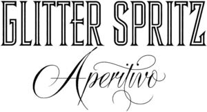

Trade Mark Journal No.2025/044 31 October 2025
WO0000001880701 (25,29,32,33)
Office of origin: Germany
Date of International Registration:7 June 2025
Date of designation in the UK:
7 June 2025

- Class 25
- Headgear; clothing; footwear; parts of clothing, footwear and headgear, namely cuffs, pocket squares, heels, hat frames; explicitly excluded from the aforesaid goods: costumes (for dressing up) and festive clothing.
- Class 29
- Milk-based drinks.
- Class 32
- Non-alcoholic beers; non-alcoholic cocktail mix drinks; non-alcoholic cocktails; non-alcoholic fruit extracts; non-alcoholic fruit drinks; non-alcoholic beverages; non-alcoholic honey drinks; non-alcoholic wines; non-alcoholic cider; aloe vera drinks, non-alcoholic; aperitifs, non-alcoholic; apple juice [sweet cider] [apple sweet cider]; flavoured carbonated beverages; beverages made from fruit; beer; brewery products; beer cocktails; beers; low-alcohol beers; coffee-flavoured beers; light beers; beer wort; effervescent powder for beverages; effervescent tablets for beverages; non-alcoholic cocktails; ice-cold fruit drinks; energy drinks; energy drinks [not for medical purposes]; de-alcoholised beverages; de-alcoholised wines; fruit-flavoured soft drinks; syrups for the preparation of flavoured mineral water; products for the preparation of carbonated waters; essences for the preparation of beverages; extracts for the preparation of beverages; fruit beverages; non-alcoholic fruit beverages; fruit juices; fruit nectars [non-alcoholic]; fruit juice beverages; fruit juices with pulp; vegetable juices [beverages]; fruit-based beverages; beverages made from vegetable juices; fruit-flavoured beverages; beverages, partly frozen; light beers; hop extracts for beer production; hop extracts for use in the preparation of beverages; ginger beer; isotonic beverages; isotonic beverages [not for medical purposes]; caffeinated energy drinks; carbonated waters; carbonated, non-alcoholic beverages; carbonated water; concentrated fruit juices; herbal syrups [non-alcoholic]; kvass [non-alcoholic beverage]; lager beer [lager beer]; lager beer [lager beer beverages]; lemonades; lemonade syrups; lithium waters; malt beer; malt syrup for beverages; malt wort; mineral waters [beverages]; beers enriched with minerals; cider [unfermented]; non-alcoholic wines; non-alcoholic, malt-free beverages [except for medicinal purposes]; non-alcoholic beverages; fruit juices for use as beverages; orange juices with pulp; pils [beer]; preparations for making beverages; preparations for making non-alcoholic liqueurs; sarsaparilla [non-alcoholic beverage]; seltzer water; syrup for making lemonade; syrups for making beverages; syrups for making fruit-flavoured beverages; syrups for making non-alcoholic beverages; syrups for beverages; smoothies [non-alcoholic fruit beverages]; soda water; sorbets [beverages]; sorbets in the form of beverages; juices with pulp [non-alcoholic beverages]; sparkling mineral water; tomato juice [beverages]; tonic waters [non-medicinal beverages]; grape juice [unfermented]; vitamin-containing beverages, not for medicinal purposes; beverages consisting mainly of fruit juices; non-alcoholic wines; de-alcoholised wines; non-alcoholic wines; waters [beverages]; lemon juices with pulp.
- Class 33
- Alcoholic fruit extracts; alcoholic beverages containing fruit; alcoholic energy drinks; alcoholic essences; alcoholic extracts; alcoholic fruit drinks; alcoholic beverages [except beers]; alcoholic beverages other than beer; alcoholic bitters; mixed alcoholic beverages other than beer-based mixed beverages; alcoholic preparations for making beverages; alcoholic punch; reduced-alcohol wines; aniseed liqueur; aniseed liqueur [anisette]; aperitifs; cider; arrack; baijiu [chinese distilled alcoholic beverage]; alcoholic pear must; bourbon whisky; alcoholic punch; brandy; cocktails; curacao; distilled beverages; distilled spirits; fermented spirits; low alcohol beverages; gin; mulled wines [alcoholic hot beverage]; cherry brandy; liqueurs; liqueurs with cream; liqueur wines; bitters [liqueurs]; malt whisky; nira [alcoholic sugar cane beverage]; peppermint liqueur; rice alcohol; rum; rumpunsche; sake; sparkling wines; schnapps; scotch whisky; scotch whisky based on liqueurs; sparkling wine; spirits; spirits [beverages]; spirits and liqueurs; marc wine; digestive liqueurs, spirits; blended whisky; juniper brandy; wine for food preparation; wines; wines with increased alcohol content; wine-based beverages [wine spritzers]; wine punches; whisky; vodka.
Craft Circus GmbH
Representative: Dr. Thomas Müller, Admiralitätstraße 16, 20459 Hamburg, GERMANY